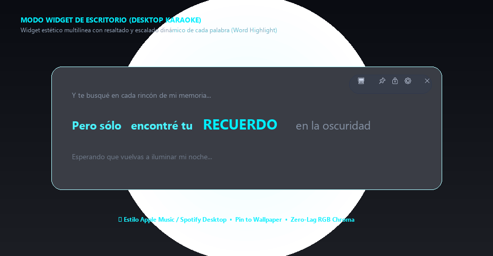
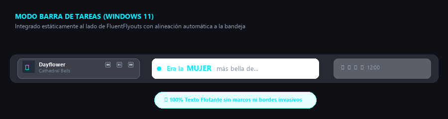
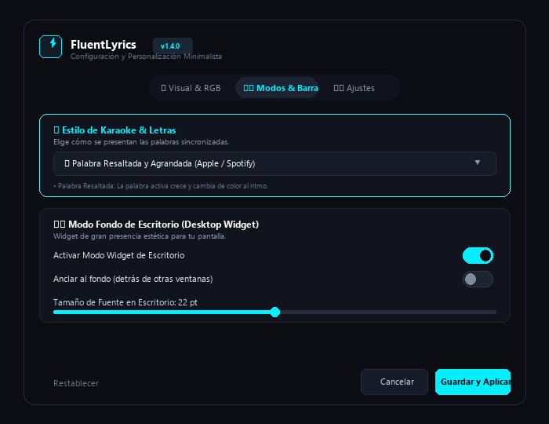

El widget de letras tipo karaoke más ligero para Windows 11 y 10. Diseñado como el compañero perfecto de FluentFlyouts: puro texto flotante, resaltado de palabras al cantar, modo TikTok y RGB Chroma con menos de 25 MB de RAM.
FluentLyrics no es otra aplicación pesada hecha con navegadores web. Está escrita en C# nativo para integrarse al sistema como un guante.
Se alinea a la perfección junto al reloj y al lado de FluentFlyouts. Su tamaño inteligente se adapta para no tapar los iconos de tus aplicaciones abiertas.
Toda la frase permanece visible en pantalla, pero la palabra exacta que el cantante pronuncia crece de tamaño y resplandece al compás de la voz.
Las palabras van saliendo una por una con una animación pop dinámica y enérgica al compás del ritmo. Ideal para cantar en karaoke.
Transforma FluentLyrics en un widget estético de gran formato para tu wallpaper, con estrofa anterior atenuada, frase activa y siguiente estrofa.
Ciclo de color continuo cyberpunk / neón en tiempo real. Utiliza un algoritmo HSV-to-RGB sin recolección de basura para mantener 0% de CPU.
Suprime completamente los marcos y bordes nativos de DWM en Windows 11. Nada de bordes grises o cajas oscuras si solo deseas ver las letras flotar.
Si Spotify cambia de canción rápidamente o la sesión multimedia se desfasa, un solo clic en el botón 🔄 reactiva la detección y recarga las letras.
No necesitas registrarte, crear aplicaciones de Spotify Developer ni pegar tokens. Escucha directamente la API nativa GSMTC de Windows.
Comparamos el consumo real medido en Windows 11 frente a las aplicaciones habituales de letras basadas en Electron o WebViews.
| Métrica | FluentLyrics (C# .NET 9) | Apps basadas en Electron | Rainmeter + Plugins |
|---|---|---|---|
| Consumo de Memoria RAM | ~22.4 MB | 180 MB - 350 MB | 80 MB - 160 MB |
| Uso de CPU en Reposo | 0.0% - 0.1% | 1.5% - 4.5% | 0.8% - 2.0% |
| Integración con Windows | Nativa (DWM & GSMTC) | Webview Emulado | Forks de terceros |
| Borde Flotante DWM 100% Limpio | Sí (Sin bordes nativos) | Raras veces / Bordes negros | Depende del skin |
| Configuración Necesaria | 0 Cuentas / 1-Clic | Tokens / Login de Spotify | Instalar plugins / Spicetify |
Capturas de pantalla reales en Windows 11 mostrando los diferentes modos de visualización.

Frase completa con la palabra activa ampliada en tiempo real y vista contextual de estrofas.

Alineación estática al lado de FluentFlyouts con puro texto flotante sin marcos invasivos.

Personalización de colores neón, switches modernos, fuentes y modos con previsualización en vivo.
No. FluentLyrics utiliza la interfaz nativa del sistema operativo Windows llamada GSMTC (System Media Transport Controls). Esto significa que detecta de forma automática la canción que Spotify está reproduciendo sin pedirte contraseñas, tokens de desarrollador ni permisos especiales.
Sí. Siempre que el reproductor informe a Windows de su reproducción multimedia (como Spotify Web en Chrome/Edge, YouTube Music Desktop, Apple Music para Windows, Tidal, etc.), FluentLyrics podrá sincronizar las letras.
Ve a Ajustes (⚙️) y en la pestaña Visual & RGB, selecciona en Efecto de Fondo: Transparent (Puro Texto Flotante) y asegúrate de que la casilla "Mostrar borde exterior" esté desmarcada. FluentLyrics aplicará la supresión de bordes de Windows 11 para dejar únicamente la tipografía luminosa.
En los controles flotantes del widget tienes un botón 🔄 (o haciendo clic derecho en el icono de la bandeja y seleccionando "Sincronizar de nuevo"). Al presionarlo, FluentLyrics fuerza la re-detección de Windows y recarga la letra de LRCLIB en cuestión de milisegundos.
100% gratuito y de código abierto bajo la licencia MIT. Puedes revisar todo el código fuente, colaborar o compilarlo tú mismo en nuestro repositorio oficial de GitHub.